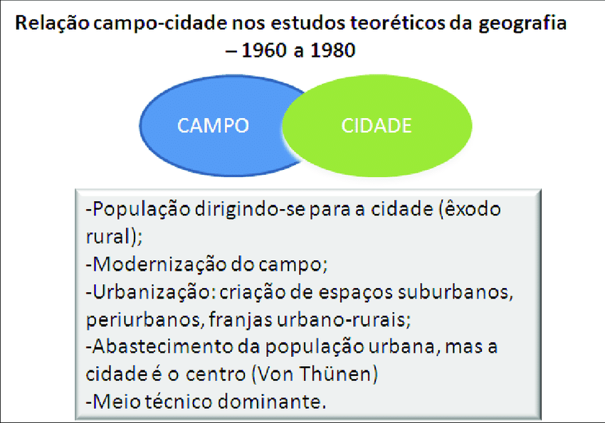
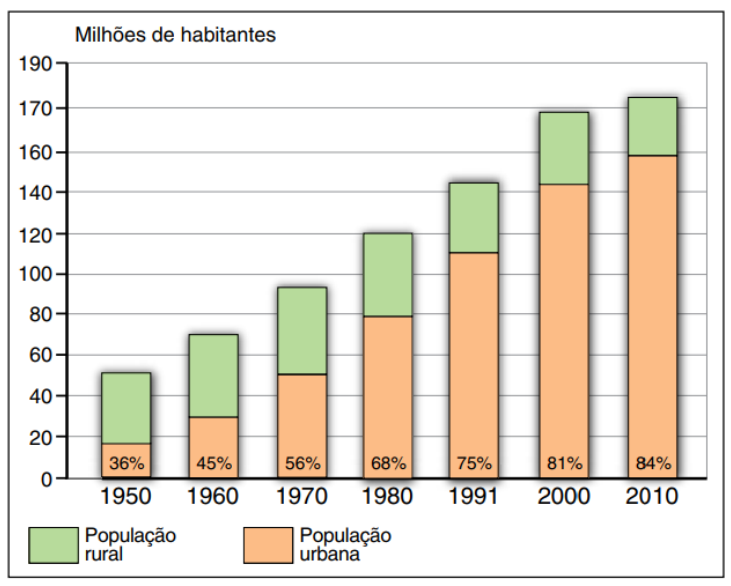

Com o tempo essa descrepância populacional diminuiu significativamente. Em 1970, o Brasil começa um processso de migração dos campos para a cidade, que então, segundo o IBGE fez com que caísse as estatísticas de pessoas na área rural de 64% para 44%. Com essa migração, a cidade começou a ter menor dependência do campo, que, por sua vez, teve um início na necessidade das cidades para o comércio de produtos agrícolas.
Fonte: https://www.researchgate.net/figure/Figura-4-Relacao-campo-cidade-nos-estudos-teoreticos-da-geografia-1960-a-1980_fig2_271104028
Atualmente
Atualmente essa relação já não se encontra do mesmo jeito de antes, ambas as áreas agora são dependente uma da outra, se tornando interdependentes. Nos dias de hoje, 87% da população brasileira vive em terrtório urbano, sendo totalmente diferente de 1950. Mas mesmo com essa massiva população, eles não se tornaram independentes. O campo necessita da cidade para a venda de produtos e compra de produtos agrícolas, já que não sao mais produzidos para o autoconsumo, e a cidade compra os materiais do campo para o consumo e produção.

Fonte: https://pt.quizur.com/trivia/geografia-4-ano-relacao-campo-e-cidade-szMH
Resumo de tudo
Assim, pode se perceber que a relação entre campo e cidade nem sempre foi tão interdependentes, e sim foi algo que foi se moldando durante o passar de vários anos, tornando-os cada vez mais dependentes um do outro. Essa relação de dependencia se deu graças ao exôdo rural, que fez com que a população do campo se movesse para cidade, fazendo com que a cidade precise do campo para a produção agrícola e pecuária e o campo precisasse do meio urbano para a venda dos produtos, que já não eram mais produzidos somente para o autoconsumo.
